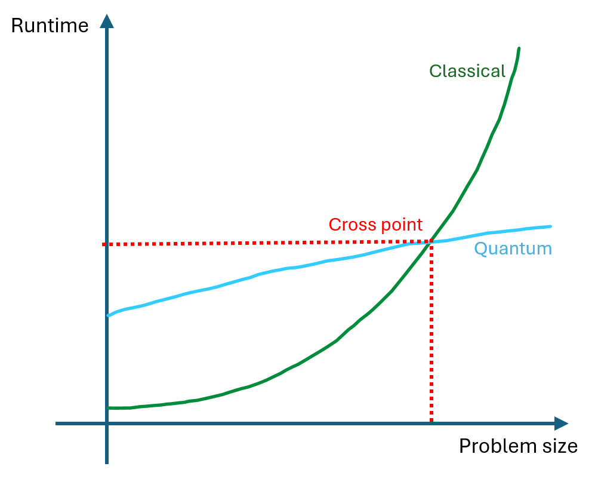
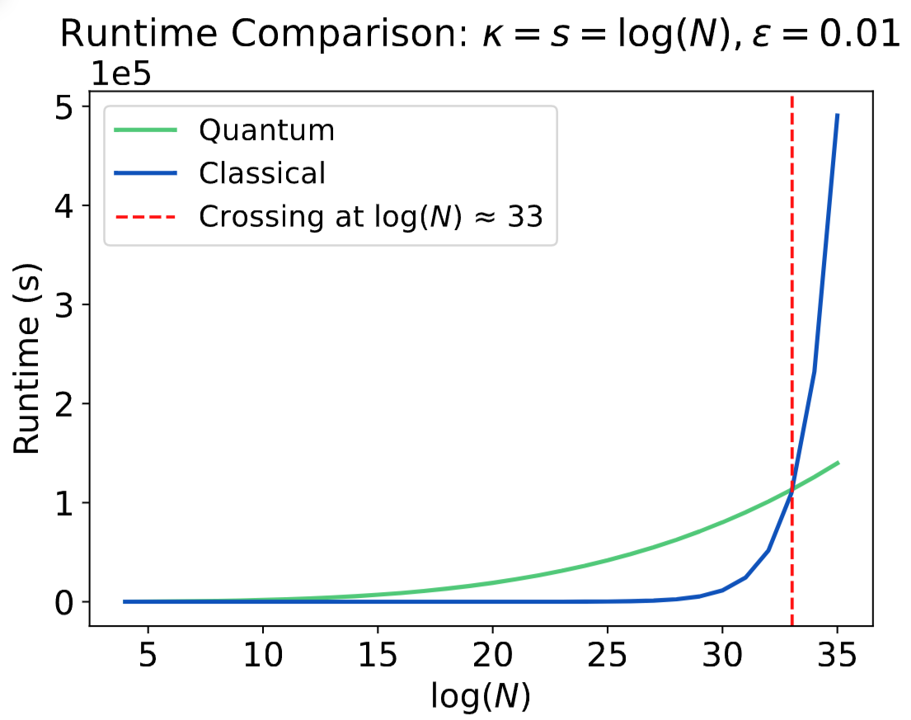

For most people who don't understand quantum computing, especially for investors and application developers, they always have a simple question that is never been answered clearly -- "How fast exactly is the quantum algorithm?", Please be frank, now if I run my task on a quantum computer, how long does it takes exactly? I don't want to hear any theoretical shit, damn, please just let me know how many hours does it take!
The answer to this question lies in two aspects. One is where quantum is faster, which is the computational complexity, namely, quantum computer's cost would scale (often exponentially) slower with problem size. The other is where quantum computer is slower, which is quantum computer execute logical instructions many times longer than classical computer due to the physical limitation of current quantum technology. So consider both aspects the real runtime comparison for quantum and classical computer will look roughly like the following:
The answer to the simple question "How long does it take" is all about this cross point, suppose the cross point is (1000, 100s), then I would say: "3 minutes", and you will keep asking "For what size?", then I would say " For whatever size, it's just roughly 3 minutes, I suggest that you consider using quantum computer if the problem size you are targeting is larger than 1000, because that's where quantum computer becomes faster"
In this work we aim to answer this simple question by finding the critical cross point for "Quantum linear system of Equations algorithm" (QLSA), which proven to solve linear system of equations in the quantum world exponentially faster than classical. Because linear system of equations is the most important computational problem, QLSA received significant attention and has been applied as a fundational algorithm in quantum machine learning and others.
Our results shows that the critical cross point for QLSA is roughly (1e10, 3h), which means QLSA can solve quantum linear systems of equations in about 3 hours. And it's quicker than classical if the matrix size is larger than 1e10 x 1e10, which is huge. This means there is no benefit to use QLSA for most applications. However there is still a potential for QLSA to be useful in specific cases where the problem size is extremely large. Of course, this analysis does not account for all the caveats of QLSA algorithm (https://scottaaronson.blog/?p=2196). Amoung which the most important thing to notice is the input output problem, which means user has to load data into the quantum computer, and also the solution is encoded into a quantum state and cannot be read directly. Thus our result should be taken as a best case scenario.